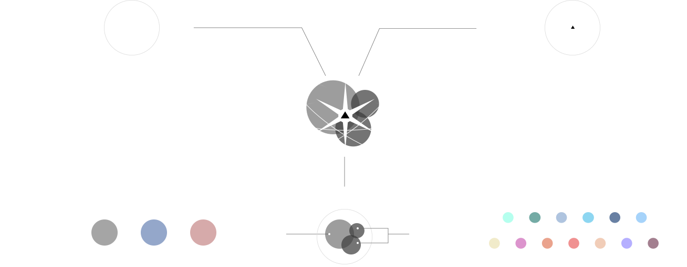

第一章
繁星点点，你我其名
第二章
仰望星空，共托情思
第三章
以人为镜，诗星闪烁
第四章
星空探索
解读唐诗中的星象密码
进入探索
繁星点点，你我其名
渺渺夜空，天上的繁星数以亿万记，而能够被古人发现、观察并记住的星星，仅是其中微不可计的一部分。古人用有限的技术与无限的想象，将绚烂的星空记于笔下，描绘出韵味无穷的诗篇。
我们从4万多首诗中，以星辰的名字为关键字，筛选出描写星象的2385首诗，进行探索与分析，体会。
古人眼中的星空
早在先秦时代，中国古人已经有朦胧的天体意识，经过发展演变，形成了一套完整的天体系统。三垣、四象、五星、二十八星宿是古代最主流的星象学说派别。
古人将不同星象和多样的维度交叉关联，创造出不同的学说和传说，指导生产、生活和文化：
天球赤道
黄道
二十八星区
太阳系
诗中常见的星象名称
在传统文学和生活中，古代人类为星宿创造了多样的别名。他们有的根据本名改编异化而来，有的通过比喻借代，将原先的存在的事物移植到天上，有的根据星星的寓意吉凶赋予了星占学的意义，有的根据传统神话与民族故事加以命名...... 多样的名称用于唐诗文学中，带来别样的韵律，并丰富了文化内涵。
图 各星宿别名统计
从唐诗数据中看，诗人婉转含蓄，用各式优美的别名，描绘灿烂星空和星空下的人与事物。
图 全唐诗常见星象别名词频统计结果（全样本）
将散乱的词云梳理成诗词星空，可以看见几颗星星特别明亮。其中，有的与皇权紧密相连（紫微、太白），有的赞美美好爱情（牛，女），有的与卜验吉凶的玄学相关（岁星），等等。
图 全唐诗常见星象别名词频统计结果（按星象）
仰望星空，共托情思
作为意象入诗，表达情感是自然界事物被赋予的常见文学用法。作为遥不可及的“天外之物”，星辰有着属于自己的独特意象。由于前朝星象文化知识的累积丰厚，星象典故形成一个庞大的体系，它为唐诗创作提供了大量素材。
我们对每首诗进行了多重维度分析，通过分类与统计，探索星象意象在唐诗中的情感表达。
星象意象在唐诗中的运用
唐诗在对星象有多重方面的运用。从出现在唐诗中的途径来看，除去常见的以自身意象作为元素出现，星星常因其本身的特点，如明亮，恒久，冷清等，为诗人在感怀和以物喻事中加以体现。还有专门以星为主题，以咏星来抒发志向，以及以星为代语，用星星的名称代指他物。
图 星象与入诗手法
诗人常将星辰用于哲理感怀之中，也歌咏星辰抒发志向，或是借有关星辰的神话传说，咏史咏志。不同的星辰在不同的题材有所偏重，比如牛郎织女常用于爱情闺怨方面的诗词，紫微，北斗等常用于歌颂皇权或抒发政治方面的情感。
星象，情感与诗人
“以我观物，故物皆著我之色彩”。透过星象中的诗词，折射出的是诗人的万千情感世界。
诗人们在选择星象入诗时，还具有相当强烈的主观性，即内在动机，因为同写星象文化，风格各异，特征显明。不同的喜好观，不同的人格气质，塑造了不同的诗风。
著名诗人常用意象及其表达情绪统计
以人为镜，诗星闪烁
星象在诗中的运用存在规律，又蕴藏着唯一性。而每首诗作为一个独立的个体，在璀璨的诗词星空中闪烁着属于自己独特的光芒，也为星空的绚烂添加光彩。
我们为诗歌的维度添加了图形化表达，构建了可探索星空作为星象诗数据集的可视化表现。通过筛选，聚类与分析，或许可以继续发现星象在唐诗中不为人知的内在规律。
诗人描绘的万千诗词星空
诗人对不同星象的偏好，直接反映了他们的性格、志向和情思。这样的偏好好似窥探他们内心的一扇窗户，透露出他们独特的情感体验，社会经历和生活态度。对特定星象的钟情不仅仅是感情的抒发，更是对人生深刻思考的体现。因此，透过对星光的选择，我们能够直观地感受到诗人的鲜明个性以及对生活探寻的经历和态度。一首首诗词化作星空中的星星，为我们带来别样的体悟。
我们选取四个代表性诗人的一首代表性诗词，并对其进行可视化编码，分别看看星象在其中的运用。

杨炯·灵台诗人
杨炯对形象具有身后的造诣，接近当时的官方潮流。
《和骞右丞省中暮望》
故事閒台阁，仙门蔼已深。
旧章窥复道，云幌肃重阴。
玄律葭灰变，青阳斗柄临。
年光摇树色，春气绕兰心。
风响高窗度，流痕曲岸侵。
天门
总枢辖，人镜辨衣簪。
日暮南宫静，瑶华振雅音。
李白·太白星精
李白对星象的运用，成为其浪漫诗风气质的重要组成部分。
《拟古十二首 其六》
运速天地闭，胡风结飞霜。
百草死冬月，六龙颓西荒。
太白
出东方，
彗星
扬精光。
鸳鸯非越鸟，何为眷南翔。
惟昔鹰将犬，今为侯与王。
得水成蛟龙，争池夺凤凰。
北斗
不酌酒，
南箕
空簸扬。
杜甫·北斗情怀
杜甫对北斗的爱，是对君主，对国家深沉的爱。
《夏日杨长宁宅送崔侍御、常正字入京》
醉酒扬雄宅，升堂子贱琴。
不堪垂老鬓，还对欲分襟。
天地西江远，星辰
北斗
深。
乌台俯麟阁，长夏白头吟。
白居易·紫微映照
紫微的频繁运用，体现了白居易的士大夫情怀，映射其政治理想。
《送令狐相公赴太原》
六纛双旌万铁衣，并汾旧路满光辉。。
青衫书记何年去，红旆将军昨日归。
诗作马蹄随笔走，猎酣鹰翅伴觥飞。
北都莫作多时计，再为苍生入
紫微
。
我们对2385首诗歌均进行了星星的绘制，组成了唐代诗词星空。让我们点击星空或者左边的面板，进行自由探索。
开始探索星空
 第一章
第一章